I created a folder in my OneDrive workspace called ArchOSC Assignment with a Pictures subfolder. I opened the terminal by right-clicking in the folder and ran git init to initialise an empty git repository.
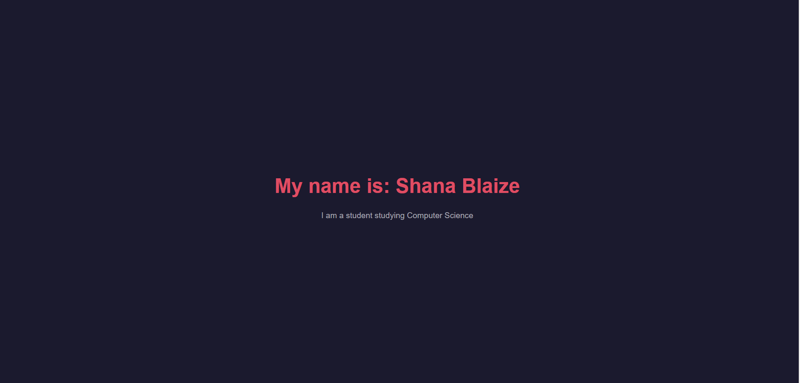
I created a new repository on GitHub, then navigated back to the terminal and entered git remote add origin with a link to my repository. I then ran git pull origin main to get the files GitHub generated.
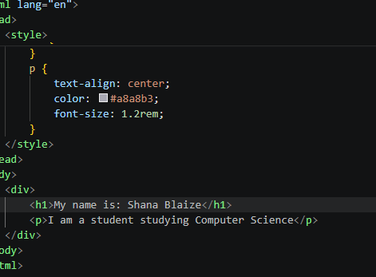
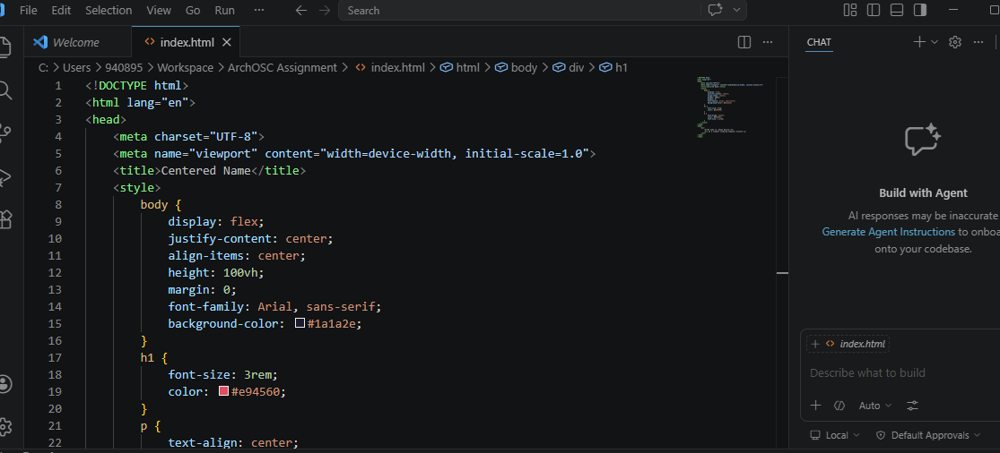
I opened VS Code and wrote HTML code to create a basic website, saving it to my ArchOSC Assignment folder. I opened the file in a browser to view the result.
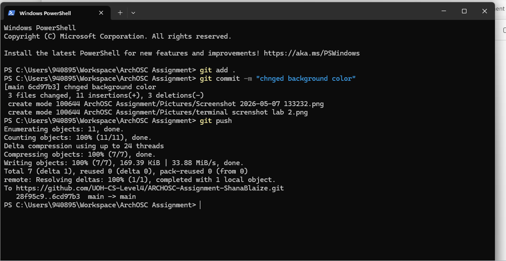
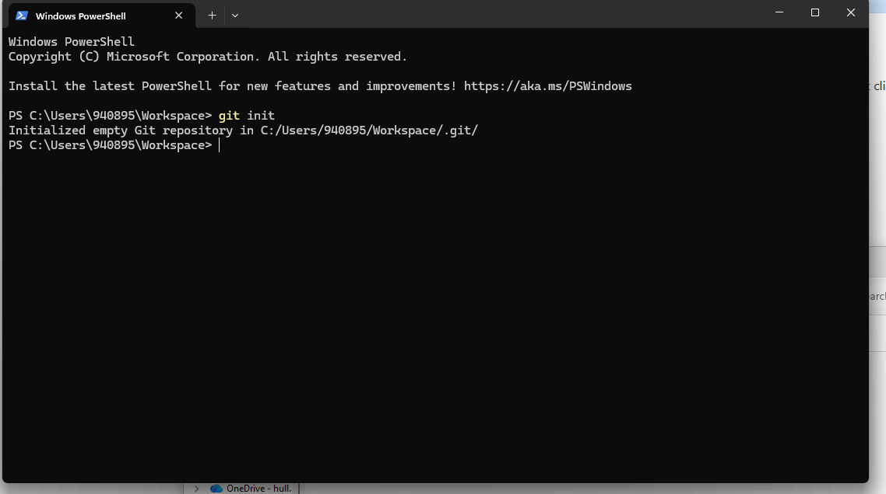
I used git status to check untracked files, then git add . to stage all files. I committed using git commit -m and used git branch -m master main to match the branch name. Finally I pushed using git push -u origin main.
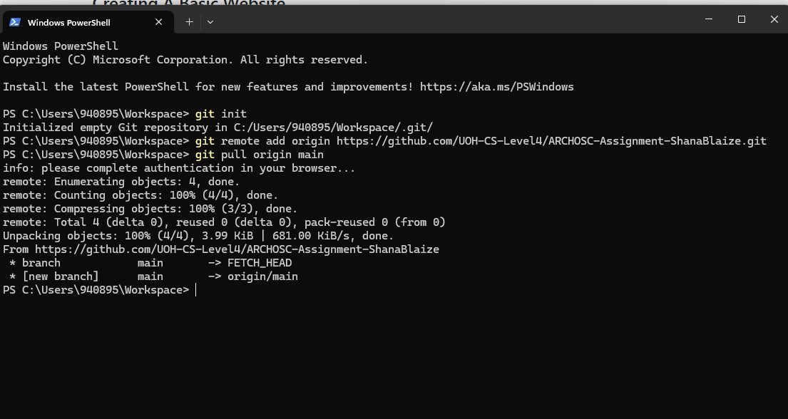
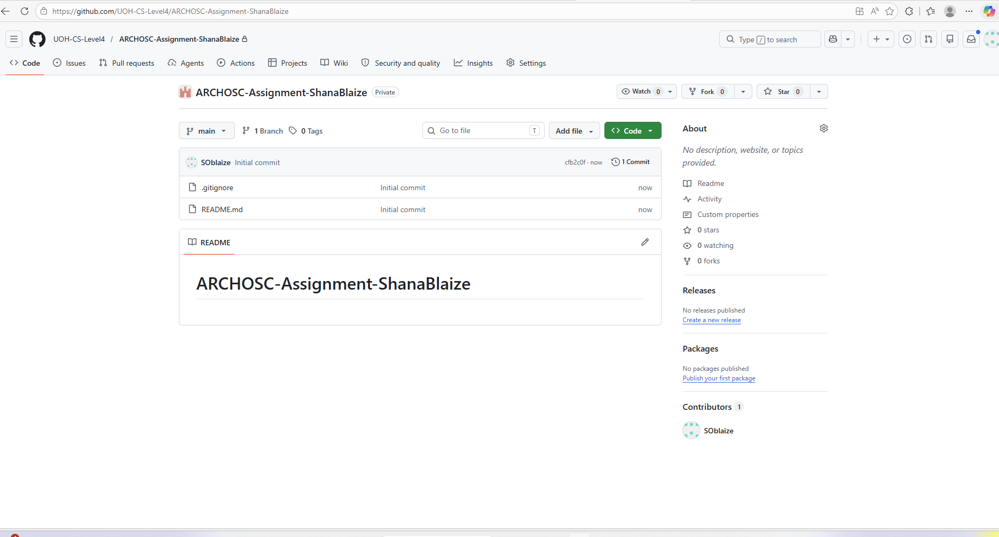
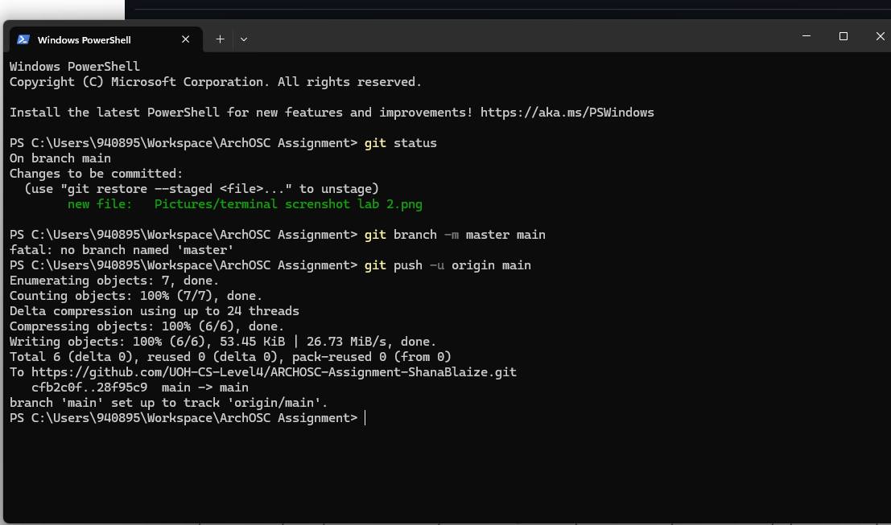
I changed the background colour and text colour, and added my name to the page. I then committed and pushed the changes to GitHub.
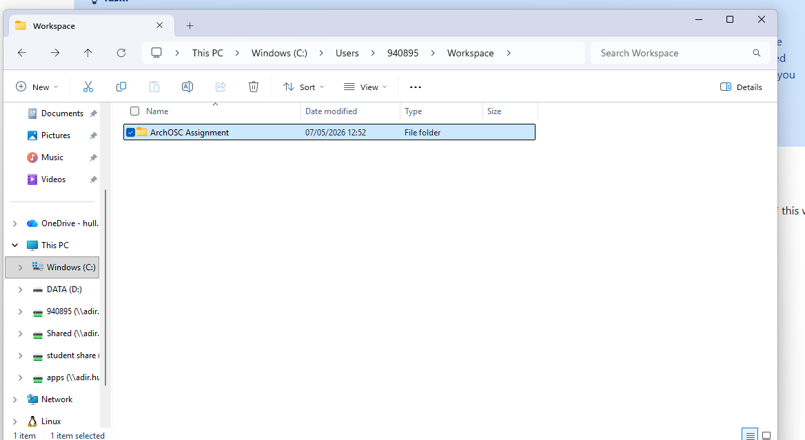
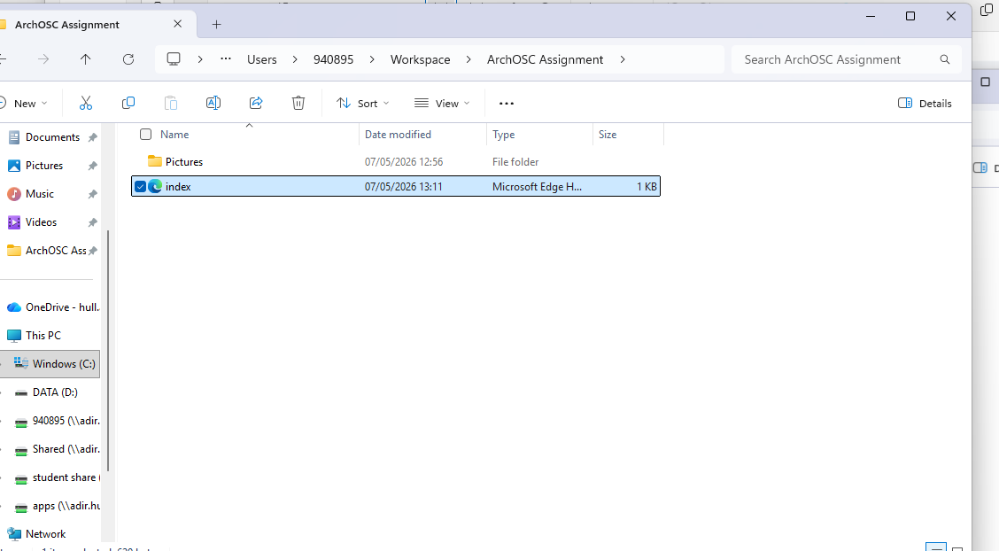
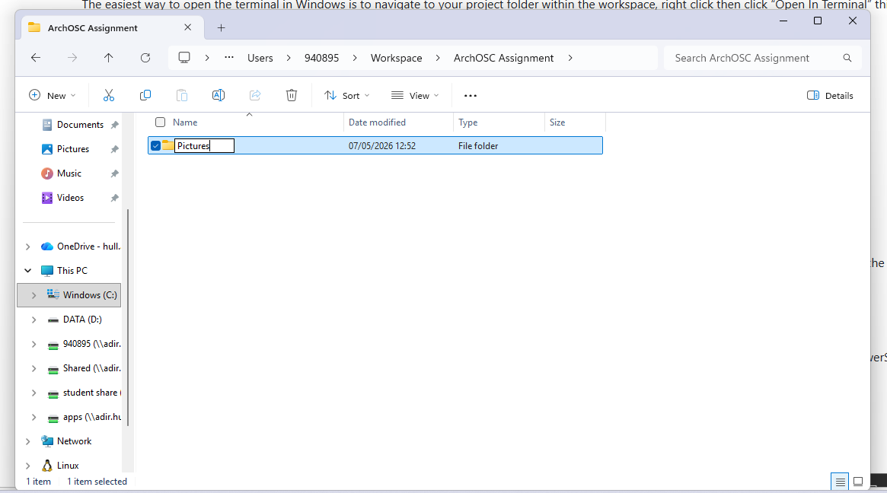
The website was successfully deployed via GitHub Pages.
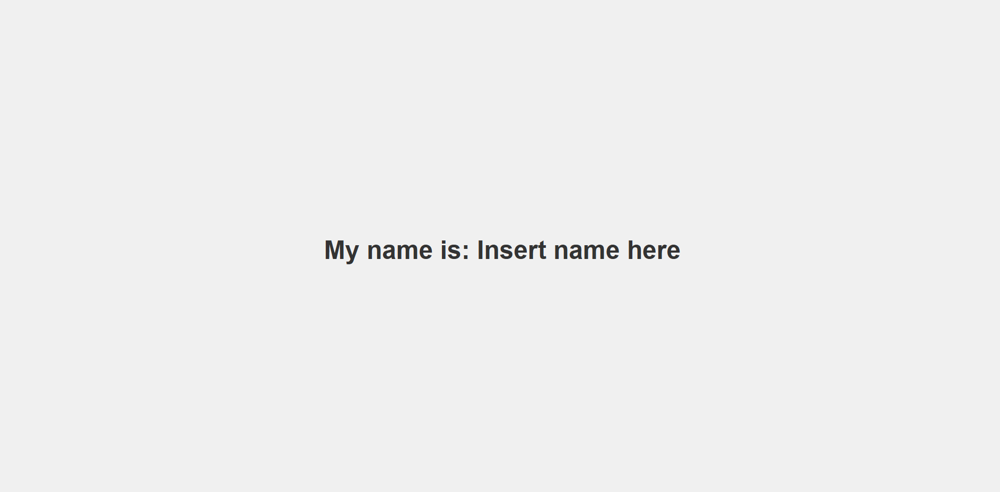
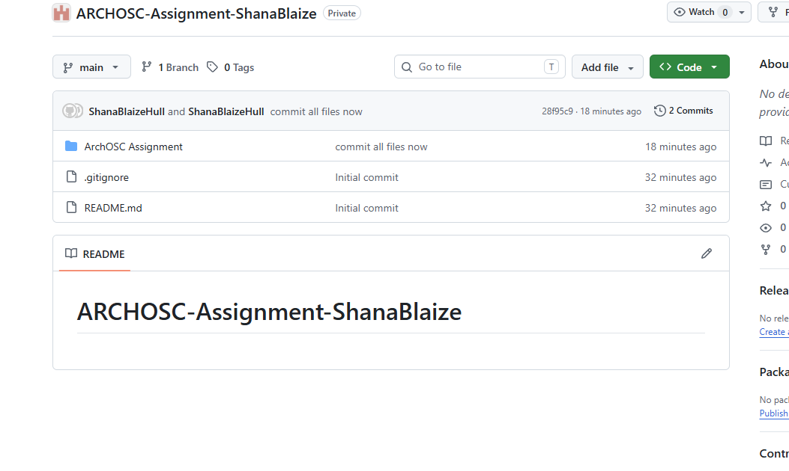
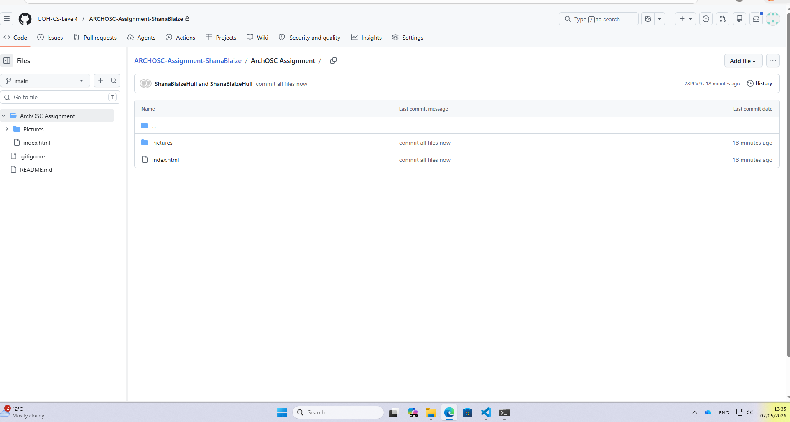